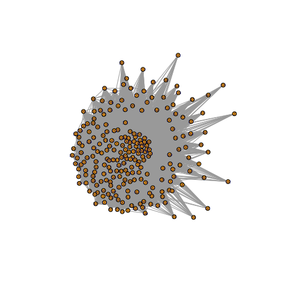
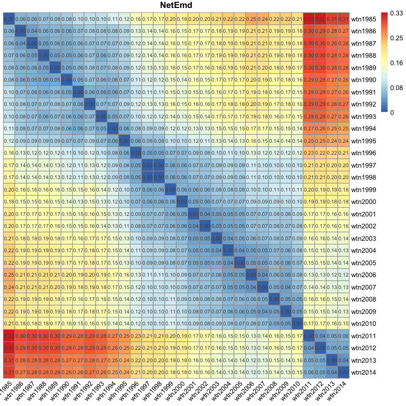

NetEmdTimeOrdering.RmdThe world trade data set consists of a small sample of world trade networks for the years 2001-2014, and pre-computed subgraph counts of a larger set of world trade networks (1985–2014). The world trade networks are based on the data set from [Feenstra et al., 2005] for the years 1985-2000 and on the United Nations division COMTRADE for the years 2001-2014.
For an introduction to NetEmd and its variants see “Simple and quick (default) usage 1: pairwise comparisons”.
For many to many comparisons see Simple and quick (default) usage 3: many to many comparisons
For other vignettes in this package see the “Menu”.
The package contains the world trade networks and pre-computed subgraph/graphlet counts in the R data object worldtradesub. This object contains a list of two lists. The first list is worldtradesub$wtnets which contains a small sample of the trade networks (2001-2014) and the second worldtradesub$Counts which contains pre-computed counts for a larger set of trade networks going from 1985 to 2014.
## Length Class Mode
## wtnets 14 -none- list
## Counts 30 -none- list
wtnets<- worldtradesub$wtnets
summary(wtnets)## Length Class Mode
## wtn2001 229 igraph list
## wtn2002 229 igraph list
## wtn2003 229 igraph list
## wtn2004 229 igraph list
## wtn2005 229 igraph list
## wtn2006 231 igraph list
## wtn2007 230 igraph list
## wtn2008 230 igraph list
## wtn2009 230 igraph list
## wtn2010 230 igraph list
## wtn2011 241 igraph list
## wtn2012 241 igraph list
## wtn2013 242 igraph list
## wtn2014 241 igraph listThese world trade networks are denser than typically sparse social networks. For example, the edge density for the network in 2001 is 0.5206466. Here is a plot of this network highlighting the relatively large number of edges:
plot(wtnets$wtn2001,vertex.size=5,vertex.label.cex=0.4)
In this example NetEmd will consider orbit counts of subgraphs containing up to 5 nodes. If NetEmd is to be called a single time, then the command netemd_many_to_many(graphs = wtnets) would suffice. The following code provides such an example:
# As the trade networks are considerable dense, this example first considers a small number of networks.
#This example may take some minutes to run.
netemd_result <- netemd_many_to_many(graphs = wtnets[1:4],mc.cores = 1)
print(netemd_result)## $netemds
## [1] 0.03712005 0.04631989 0.04988984 0.04545267 0.05052376 0.04350508
##
## $comp_spec
## name_a name_b index_a index_b
## 1 wtn2001 wtn2002 1 2
## 2 wtn2001 wtn2003 1 3
## 3 wtn2001 wtn2004 1 4
## 4 wtn2002 wtn2003 2 3
## 5 wtn2002 wtn2004 2 4
## 6 wtn2003 wtn2004 3 4However, if there are pre-computed counts or features NetEmd can be called via these features instead.
World trade networks consist of relatively dense networks, thus leading to longer computational times for the calculation of the subgraph counts. Hence, it is advisable to pre-compute counts in case there is a need to call NetEmd multiple times. This may, for example, be the case when adding a new network to the data set. The following illustrates the extraction of subgraph counts for the small network sample.
# This example may take more than a few minutes to run (approx. 20 mins) , and it is not necessary to run it for the upcoming examples as a larger set of counts has been already computed.
if(FALSE){# It is not necessary to run, as these counts are already available in.
Counts <- list()
for(i in 1:length(wtnets)){
Counts[[ names(wtnets)[i] ]] <- count_orbits_per_node(graph = wtnets[[i]],max_graphlet_size = 5)
}
}Now, with pre-computed counts NetEmd can be calculated more rapidly as the computations of the counts are often the bottle neck in the computational time of NetEmd. NetEmd will be called 435 times in order to obtain all pairwise comparisons between the trade networks from 1985 to 2014 (networks with pre-computed subgraph counts):
# The pre-computed counts already in the package
Counts <- worldtradesub$Counts
#Calling NetEmd
netemd_result <- netemd_many_to_many(dhists = Counts ,mc.cores = 1)
#Results
netemd_matrix <- cross_comp_to_matrix(measure = netemd_result$netemds, cross_comparison_spec = netemd_result$comp_spec)
print(netemd_matrix[1:10,1:5])## wtn1985 wtn1986 wtn1987 wtn1988 wtn1989
## wtn1985 0.00000000 0.06000566 0.06388141 0.07091367 0.07508959
## wtn1986 0.06000566 0.00000000 0.04291007 0.05647305 0.06232073
## wtn1987 0.06388141 0.04291007 0.00000000 0.04762522 0.05721742
## wtn1988 0.07091367 0.05647305 0.04762522 0.00000000 0.04730003
## wtn1989 0.07508959 0.06232073 0.05721742 0.04730003 0.00000000
## wtn1990 0.08075132 0.05614243 0.05285928 0.05107413 0.04988101
## wtn1991 0.09675875 0.07111393 0.06269038 0.05832283 0.06260774
## wtn1992 0.09620353 0.08368101 0.07167237 0.07333704 0.07852889
## wtn1993 0.09766273 0.07737793 0.07038021 0.05872911 0.06700535
## wtn1994 0.10880319 0.07864215 0.07424942 0.06994889 0.07561539Based on the comparison of the world trade networks across the years, we can identify periods of time where possible considerable changes in world trade have occurred. The following heat map clearly shows the existence of two potential changes in the world trade system, and which correspond to 1995-1996 and 2010-2011.
netemd.plot(netemdlist=netemd_result,clustering_method="ward.D",main="NetEmd",docluster = FALSE)
The World Trade Organization (WTO) said the following about these years:
About 2010-2011: “World trade growth decelerated sharply in 2011 as the global economy struggled under the influence of natural disasters, financial uncertainty and civil conflict. A slowdown in trade had been expected after the strong rebound of 2010 but the earthquake in Japan and flooding in Thailand shook global supply chains, and fears of sovereign default in the euro area weighed heavily in the closing months of the year. The civil war in Libya also reduced oil supplies and contributed to sharply higher prices. All of these factors combined to produce below average growth in trade in 2011” WTO report 2012, section “World trade in 2011” accessed on February 4th 2021 (https://www.wto.org/english/res_e/booksp_e/anrep_e/world_trade_report12_e.pdf) and (https://www.wto.org/english/res_e/publications_e/wtr12_e.htm)
About 1995-1996: “The WTO was created in January 1995, upon the completion of the Uruguay Round which established new rules for international trade in goods, services and intellectual property.” WTO 1996 press releases accessed on February 4th 2021 (https://www.wto.org/english/news_e/pres96_e/anrep.htm).
A. E. Wegner, L. Ospina-Forero, R. E. Gaunt, C. M. Deane, and G. Reinert. Identifying networks with common organizational principles. Journal of Complex networks, 2017.
R. C. Feenstra, R. E. Lipsey, H. Deng, A. C. Ma, and H. Mo. World trade flows: 1962-2000. Technical report, National Bureau of Economic Research, 2005. See also https://cid.econ.ucdavis.edu/wix.html.
United Nations Statistics Division. United nations commodity trade statistics database (un comtrade). http://comtrade.un.org/, 2015.
W. Ali, T. Rito, G. Reinert, F. Sun, and C. M. Deane. Alignment-free protein interaction network comparison. Bioinformatics, 30:i430–i437, 2014.
L. Ospina-Forero, C. M. Deane, and G. Reinert. Assessment of model fit via network comparison methods based on subgraph counts. Journal of Complex Networks, page cny017, August 2018.
F. Picard, J.-J. Daudin, M. Koskas, S. Schbath, and S. Robin. Assessing the exceptionality of network motifs. Journal of Computational Biology, 15(1):1–20, 2008.